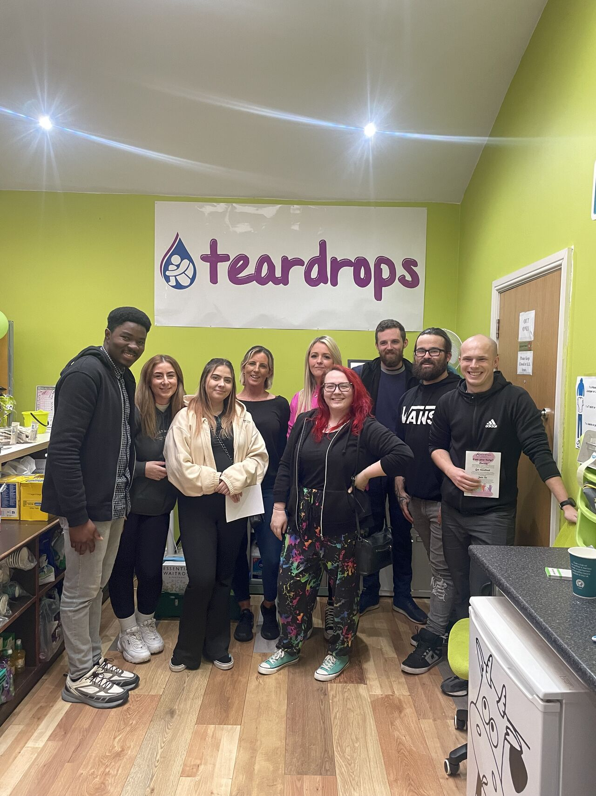

Home
Welcome to my personal page, a digital reflection of my journey from humble beginnings to a global stage. Titled “From Village Roots to Global Innovation”—a teaser of my path from selling onions with my mother in a rural Nigerian market to presenting at international conferences—this site encapsulates my evolution as an innovator in hardware security, formal verification, and quantum computing. Beyond my academic and professional pursuits, I find fulfillment in diverse interests that enhance my skills. I take pleasure in preparing traditional African cuisine, a craft that hones my attention to detail and cultural appreciation. Reconnecting with long-lost friends via social platforms strengthens my communication and networking abilities, vital for collaborative research. Evening walks offer a reflective space to recharge creatively, while my passion for cybersecurity deepens through penetration testing and monitoring on virtual machines, where I explore innovative security solutions. This platform showcases my holistic development as a scholar and innovator.
My Story
Growing up selling onions with his mother in a village market, Chukwunalu turned late-night studies and a deep hunger for knowledge into academic success. From winning a community scholarship to completing a degree in Electrical Engineering, his journey has been shaped by resilience and a passion for technology. Determined to chart a different path, he transformed late-night study sessions into academic triumphs, earning community scholarships and distinguishing himself as a beacon of hope for his family. His story reflects an unwavering commitment to education, innovation, and uplifting others; a commitment that continues to define his career and community work. Today, he is committed to using his skills to make a global impact in cybersecurity, quantum computing, and education.
Education & Research in Hardware Security and Formal Verification
Chukwunalu is currently pursuing an MSc in Electrical and Computer Engineering at North Dakota State University (expected Spring 2026). His current research is in Hardware Security and Formal Verification specifically Hardware Trojans in Asynchronous Pre Charge Half Buffers (PCHB). He also, has condcuted research in Formal Property-Based Verification of LSQ-LFENCE for Memory Ordering and Security Assurance, tackling speculative execution vulnerabilities in modern processors. He was honored as a 2025 P.O. Pistilli DAC Ambassador Award winner for creating a Wikipedia article on Design Automation for Quantum Circuits and presented at the prestigious DAC 2025 conference in San Francisco, establishing himself as a rising voice in hardware security and high-performance computing.
Education & Research Timeline
2010–2015
Petroleum Technology Development Fund (PTDF) Scholarship - Completed B.Eng. in Electrical Engineering at Nnamdi Azikiwe University, awarded Best Student Research for "Energy-Efficient Cooperative Hybrid Precoding for Millimetre-wave Communication Networks."
Aug 2022 – Jul 2024
Masterschool - Relevant Courses: Networking and Cryptography, Security and Risk Management, Asset Security, Security Architecture and Engineering, Communication and Network Security, Identity and Access Management (IAM), Security Assessment and Testing, Security Operations, Software Development Security.
2025
P.O. Pistilli DAC Ambassador Award - Emerged Winner globally in the Design Automation Conference (DAC) Young Fellow Program challenge; presented at DAC 2025, San Francisco. Wrote an exceptional contribution on "Design Automation for Quantum Circuits"
2025–2026 (Expected)
MSc in Electrical and Computer Engineering - North Dakota State University; researching Hardware Trojans in Asynchronous PCHB Circuits. Also read my research on Formal Verification of LSQ-LFENCE for Memory Ordering and Security Assurance. Read more.
Professional Journey in Cybersecurity
He has led cybersecurity teams at Barclays UK, Amazon UK and Zenith Bank Plc, implementing cutting-edge solutions to protect global financial systems. From deploying advanced penetration and monitoring tools to designing Raspberry Pi-based battery monitoring systems for USDA bee habitat networks, his professional path bridges industry expertise with innovative engineering solutions.
Community Impact
At Barclays UK, Chukwunalu volunteered with the Teardrops Initiative, supporting a charity organization by serving warm meals, cleaning the environment, and transforming spaces into havens for homeless individuals. He found profound fulfilment in every small act of kindness, driven by his belief in the power of compassion to restore dignity and hope. Having lost his mother to cancer, he has since dedicated his life to educating and supporting women on breast cancer awareness through the sponsorship of the Joyful Tears Initiative in Nigeria. His community outreach extends to youth development as well; during his National Youth Service Corps in 2017, he passionately educated young people on the 17 Sustainable Development Goals, inspiring them to take action toward a more equitable and sustainable future. Most recently, during Fall 2025, Chukwunalu volunteered at North Dakota State University to assist with onboarding and freshmen registration. He provided guidance and support to new students, ensuring they felt welcomed and empowered as they embarked on their academic journey.
Awards & Publications
Awards
- P.O. Pistilli DAC Ambassador Award (2025) – Emerged winner, globally in the DAC Young Fellow Program Challenge for an exceptional article on “Design Automation for Quantum Circuits”, earning a $1,500 prize, full sponsorship to DAC 2026 with travel support, and recognition for outstanding knowledge-sharing at the 62nd Design Automation Conference, San Francisco.
- Certificate of Participation – 2025 Three-Minute Thesis (3MT) Competition, North Dakota State University.
- Award of Excellence, Barclays UK – Employee of the Month for detecting and mitigating an advanced persistent threat (APT) attack.
- Award of Excellence, Amazon UK – Employee of the Month for exemplary teamwork and collaboration.
- Petroleum Technology Development Fund (PTDF) Scholarship (2010–2015) – Full merit-based scholarship for undergraduate studies.
- Best Student Research Award – For undergraduate thesis on “Energy-Efficient Cooperative Hybrid Precoding for Millimetre-Wave Communication Networks” at Nnamdi Azikiwe University.
- Leadership Excellence Awards – Sustainable Development Goal (2015) and Rotary International, UNIZIK Chapter (2016).
- Best Leadership and Innovation Award – Electrical Engineering Student Association (EESA), UNIZIK.
- Spokesman Award – Nigerian Institute of Electrical Engineering Students, UNIZIK Chapter (2012).
Publications
- Formal Verification of LSQ-LFENCE for Memory Ordering and Security Assurance, Chukwunalu Asuai, Kushal K. Ponugoti – IEEE International Carnahan Conference on Security Technology (ICCST) 2025, San Antonio, TX, USA. (Accepted for publication).
- Exposing Phishing Strategies: Leveraging Machine Learning to Examine URL Characteristics for Proactive Threat Identification – Preprint submitted to SpringerNature Scientific Reports. Read More
- Cybersecurity Risk Assessment for Non-Experts: Focusing on Small and Medium Enterprises – IOSR Journal of Computer Engineering (IOSR-JCE), Vol. 26, Issue 2, Mar-Apr 2024, PP 27–37. Read More
- Investigating and Addressing Security Policy Misconfigurations – IOSR Journal of Engineering (IOSR-JEN), Vol. 14, Issue 4, Apr 2024, Series 2, PP 01–12. Read More
Skills Visualization
Skills
Technical Skills
- Python
- MATLAB/Simulink
- JasperGold
- SystemVerilog
- SMT
- Kali
- Wireshark
- Metasploit
- PowerShell
- Splunk
- Burp Suite
- Deep Learning
- Artificial Intelligence
Soft Skills
- Critical Thinking
- Excellent Written and Communication Skills
- Problem Solving
- Leadership
- Teaching Skills
- Emotional Intelligence
- Research Skills
- Organizational Skills
Personal Projects
Below are some of my independent projects that demonstrate my practical expertise in network security, cryptography, and web application protection. Each project includes detailed documentation and source code, reflecting my commitment to hands-on learning and innovation.
FPGA Based Audio Processor
A real-time audio processing system using FPGA, with I2S interface and WM8731 codec configuration.
Autonomous Drone Navigation with Real-Time Obstacle Avoidance
An autonomous drone navigation system using computer vision and reinforcement learning for obstacle avoidance.
Gesture-Controlled Robotic Arm
A robotic arm controlled by a sensor glove using flex sensors and IMU for gesture recognition.
IoT-Based Smart Energy Monitoring System
An IoT system using ESP32 and INA219 to monitor energy consumption, with MQTT, ML predictions, and a React dashboard.
Neural Network Accelerator on Custom ASIC
A neural network accelerator for a 2-layer MLP on a custom ASIC, using a 4x4 systolic array for MNIST digit classification.
PCHB Trojan Detector
Formal verification for asynchronous circuits
Hardware Trojan Detector
A formal verification framework for detecting malicious circuits in chip designs.